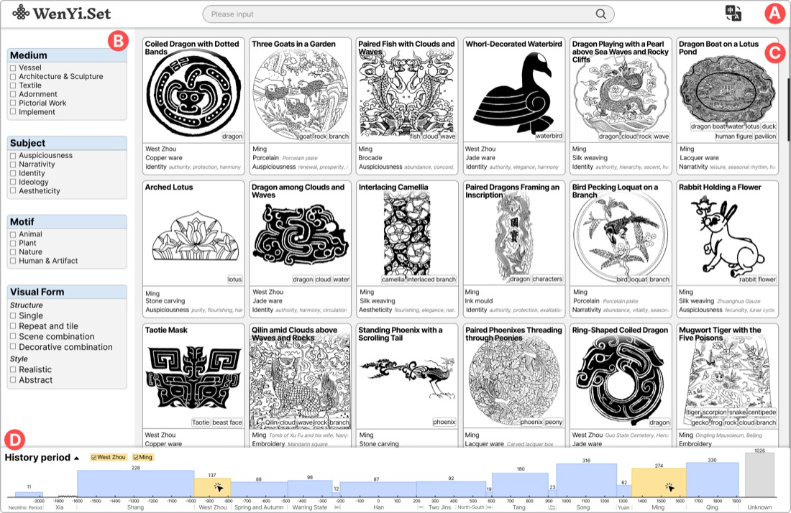
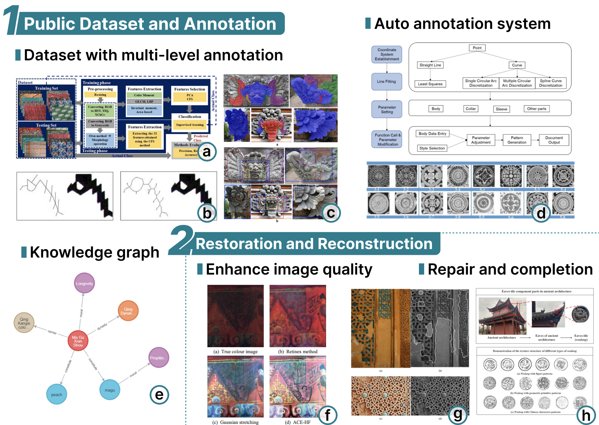
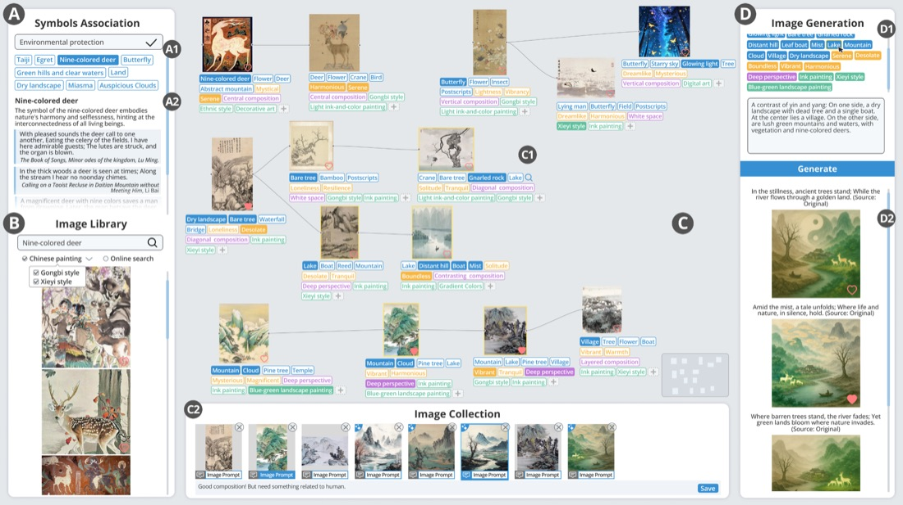
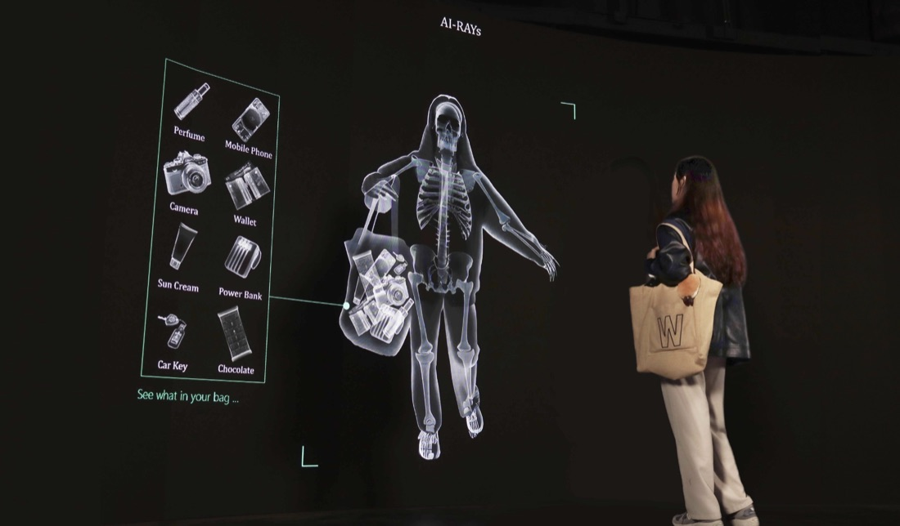
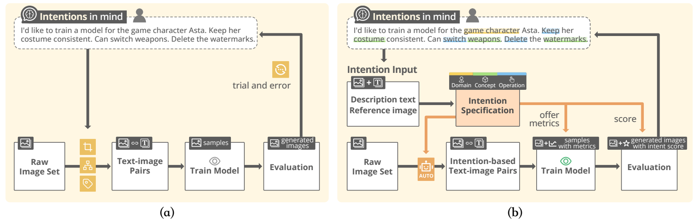
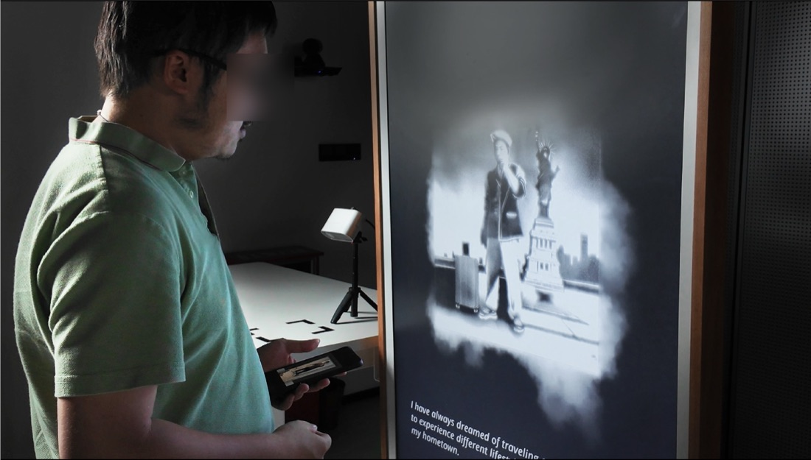

2024.09 — present
The Hong Kong University of Science and Technology (Guangzhou)
Ph.D. Candidate · Computational Media and Arts
I'm a Ph.D. candidate in the Computational Media and Arts Thrust at The Hong Kong University of Science and Technology (Guangzhou), co-supervised by Prof. Wei Zeng and Prof. Theo Papatheodorou. I hold a master’s degree in Computer Technology from Peking University and a Bachelor of Arts in Visual Communication Design from Beihang University.
My research explores how people engage with visual references and collaborate with AI to develop and express creative ideas. I design and study interactive systems that support the process of finding inspiration, making connections, and shaping creative intentions.
Alongside my research, I create interactive artworks that explore how machines perceive us and how AI can reimagine personal memories and experiences.
Ph.D. Candidate · Computational Media and Arts
Master of Computer Technology · Digital Art
Bachelor of Arts in Visual Communication Design · Digital Media Art






An interactive AI installation that reimagines personal memories through images and stories.
Second Prize, National Finals · Digital Image and Video Design
Grand Prize (2018), Second Prize (2019), First Prize (2020)
Second Prize
Second Prize